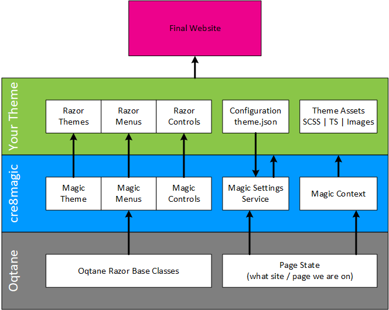
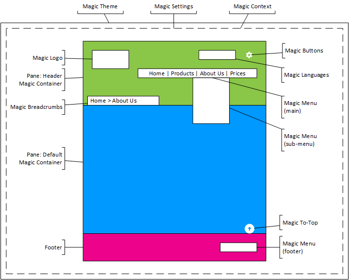

cre8magic for Oqtane – Professional Theme Design
🪄🪄🪄 Create Magic / Stunning / Amazing Designs on Oqtane 🪄🪄🪄
Oqtane is a Blazor based platform to create awesome solutions. It is heavily inspired by the Site/Page/Module model used in DNN. So it's almost ready to create awesome websites and CMS solutions.
But there are two missing pieces (☮️) to create amazing websites:
- Real Content-Management features - which can be done with the extension 2sxc
- Tools to make designing themes fast and professional - enter: cre8magic
cre8magic makes Oqtane Designer-Friendly
As a designer, you need certain tools and workflows to be efficient, such as:
- the ability to make a small change and then reload the page to see the result
- the need to focus on the what (like the design), without wasting time on the how (like C# code to create the menu)
- the ability to create variations of your work, such as other layouts which are similar
- every tool you add (such as cre8magic) should help, but never restrict
These aspects are important for the productivity of every designer. Now if you've worked with Oqtane (or Blazor for that matter) you will quickly see that this is not possible. This means you can whatever you want, but there is a lot of code involved, and a lot of time-consuming restarts.
cre8magic takes care of all these problems 🚀
cre8magic combines very simple Razor and lets you do everything through settings.
Most layouts have very similar HTML, but do vary a bit. For example, it could have different CSS classes to give it the look you need or a different logo file.
imagine tweaking this at runtime (without compiling) 😏
Overview
This is how cre8magic enhances Oqtane so that your Theme can focus on the design:
The resulting page will usually have something like this:
See a Working Example and Get Started
Since this is a library, just reading the docs won't cut it. It's best to see this in action on a real-life example. Try the ToShine Theme Template, it will make things much easier to understand.
👉🏼 See 2shine Theme Template
👉🏼 See Get Started
What's in the Magic Box
Magic Settings: A Settings / Configuration System 👉🏾 see Magic Settings 👉🏾 see Settings JSON file 👉🏾 see JSON schema
Magic Razor Base Classes These are the important base classes which your Razor files will inherit. All have in common, that they know about the theme-wide
Settingsand provide helper methods to get things done easily and quickly, with as little code as possible.- Theme / Container Level Base Classes
MagicTheme- the foundation for ThemesMagicContainer- the foundation for Containers
- Important Base Controls / Components
MagicLanguagesis the base for the languages menuMagicBreadcrumbsis the base for the breadcrumbsMagicMenuRootis the base for menu entry point, loading the configuration, nodes etc.MagicMenuBaseis the base for each menu type, like Horizontal, Vertical, Mobile, ...MagicLoginis the base for login/logout icons and texts
- Generic Base Controls / Base Components
These are meant for any other custom controls that you have.
MagicControlis for razor controls that has the Octane API (it inherits fromThemeControlBase)MagicComponentis for razor controls with just the basic Razor API (inherits fromComponentBase)
- Theme / Container Level Base Classes
Magic Razor Controls / Components These are standalone controls for you to use, which you will normally just use but not inherit, as they already have their HTML output or something. Anything we refer to as a
Controlinherits from the OqtaneThemeControlBase, while things we refer to as aComponentinherit from the .netComponentBase.- Functional Controls / Components
MagicOqtaneControlPanela control which adds the main control panel for adminsMagicContextAndSettingsa wrapper used in every theme to ensure Magic Page Context and MagicSettings work
- Debug and Error Handling
MagicExceptionsa control showing important errors to adminsMagicMenuDebuga debug helper to see what configuration a menu has and whyMagicLanguagesDebuga debug helper to see what configuration the languages haveMagicThemeDebugdebug helper to see all the current settings on this theme
- Functional Controls / Components